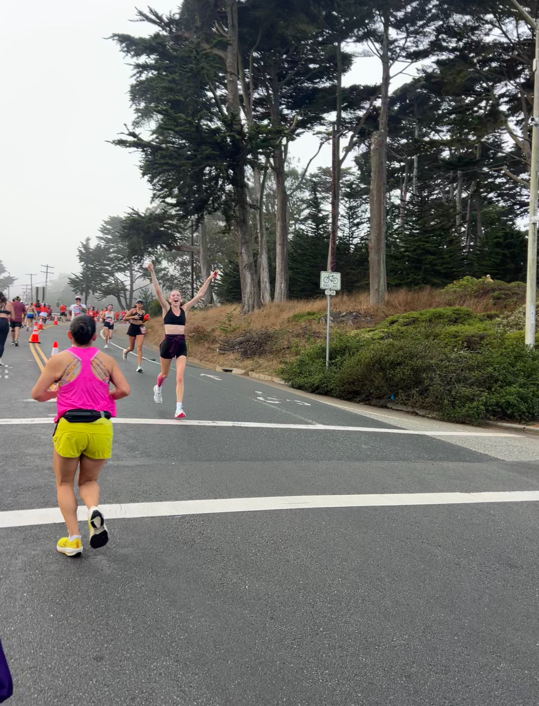
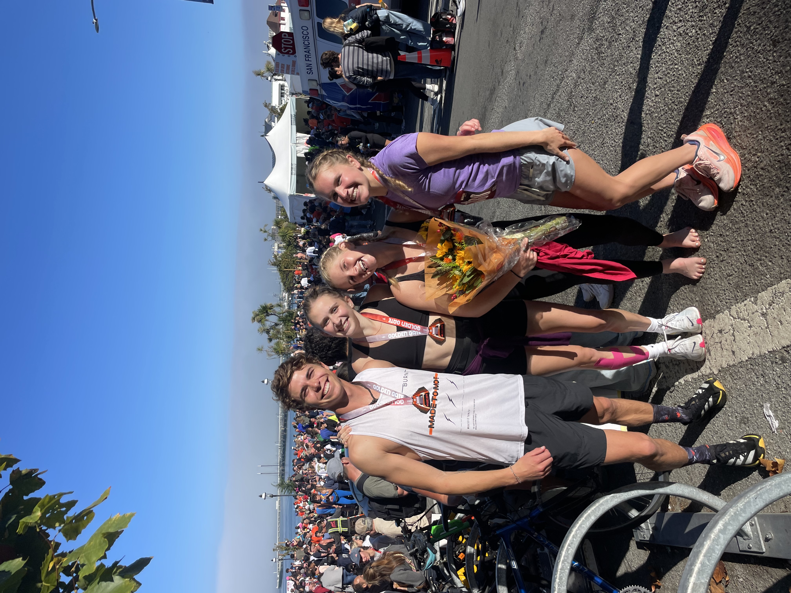
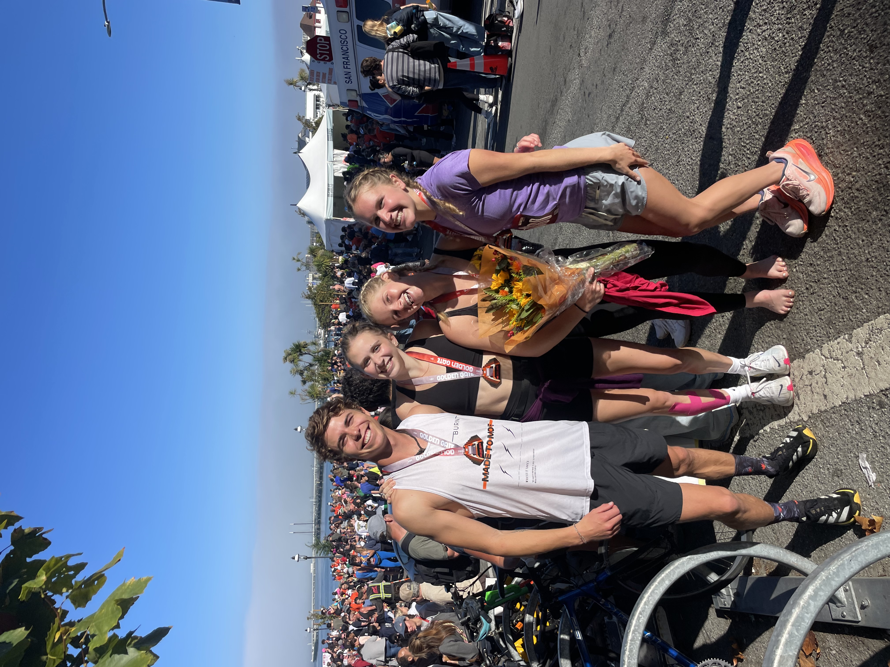

This is me running my fastest half marathon on Nov. 2. I got my PR on this course, but let me tell you, this was on very hilly terrain, but on the bright side I got to run across the Golden Gate Bridge!
Hey! I’m Maya, and running has always been a huge part of my life. I’ve loved it for as long as I can remember—ever since I first laced up a pair of running shoes as a kid and just took off. I ran my first race when I was 8 and finished my first half marathon at 13, which taught me what it really means to push my limits. Running has shown me how rewarding it feels to work hard toward a goal and has become something I can’t imagine my life without.
 



This was me after finishing my fifth half marathon in April! I ran it in Ventura, California and I felt so good the entire time and would definitely recommend this race for new runners as the course is not super hilly!